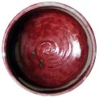
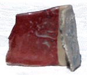
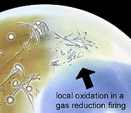

| Reducing
in an Electric Kiln
Avoid premature kiln ageing
Many potters, ceramic artists and hobbyists have electric kilns,
but not gas or woodfiring kilns at their disposal. This poses a
problem if you want to create reduction glazes such as copper reds
or celadons. These glazes require a reduction atmosphere, where
the kiln is starved of oxygen. Free carbon in the form of carbon
monoxide is formed. (This is also why reduction firings should be
done in very well ventilated areas. See the Toxic
Materials Database for more info.) This is normally done
by reducing the flow of fresh air to the kin interior, by closing
off the flue (chimney). The oxygen inside the kiln is quickly used
up by the combustible fuel (wood, gas or oil) and different chemical
reactions take place than in an oxidizing atmosphere.
In
the reducing atmosphere, copper forms metallic copper instead of
copper oxide. It is this metallic copper that gives copper red glazes
their distinct color. Iron forms iron oxide (FeO2) in oxidation,
but in reduction, ferrous iron (FeO) is produced, with its bluish,
green or black hues.
Reducing electric kilns is a problem. It is possible to throw in
combustible materials through spy holes, but this is difficult.
More importantly, the carbon tends to aggressively attack the kiln
elements (heating coils), considerably shortening their life through
corrosion. If creating a reducing atmosphere in an electric kiln
is so damaging, what is the solution? There are two answers to this.
- Artificial Reduction
In artificial reduction, a reducing agent is introduced into the
glaze itself. This is usually silicon carbide (SiC). Silicon carbide
has a strong reducing effect on the other glaze materials. 1.5
- 2 percent should be enough to create the desired effects. The
finest available grade (300 mesh or finer) should be used, so
the material disperses as evenly as possible in the glaze, otherwise
specks may appear. Sometimes bubbling of the glaze may occur (similar
to a crater glaze), then soaking at top temperature is recommended.
- Saggars
You
can make your own special custom containers or lidded boxes in
which you put your pottery along with some combustible material
like coal or moth balls. When the organic material burns, it creates
a localized reduction atmosphere inside the box. You need to work
out the amount - too much will cause blackening through carbon
trapping, too little and there won't be sufficient reduction effects.
Above left: Saggar fired test tile with reduced cone 6 copper
red glaze.

You might think that oxygen will enter the container from the
outside, but that isn't the case. Oxidation and reduction remain
localized. This is also an effect that can sometimes be seen even
in a wood or gas kiln, where there may be areas of local oxidation,
despite an overall reduction atmosphere (see image).
More Articles
Firing Techniques |